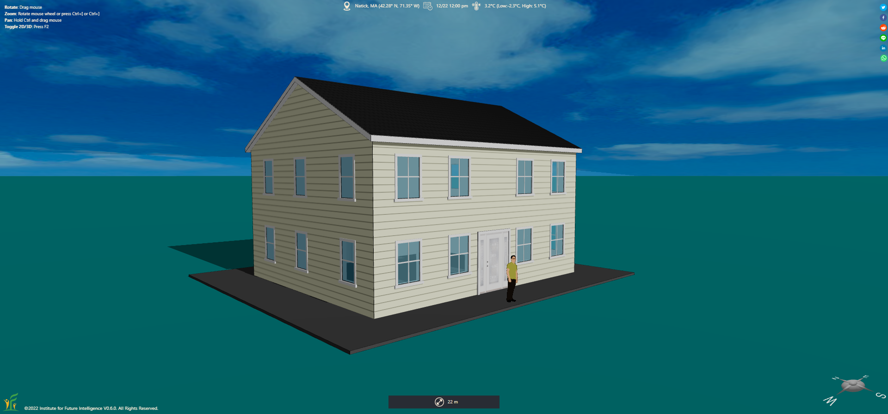
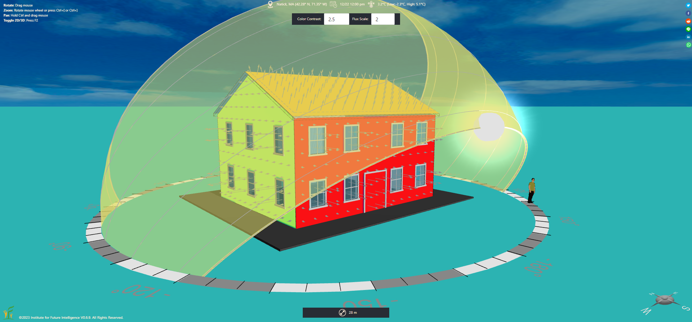
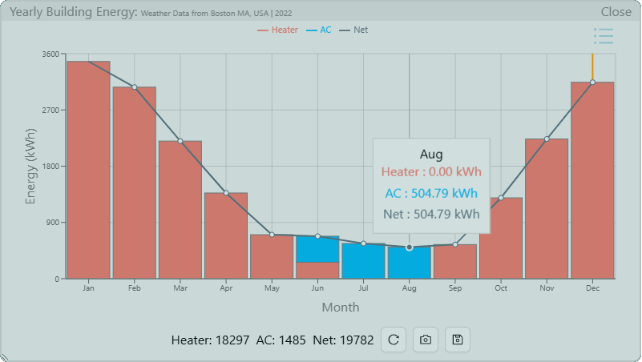
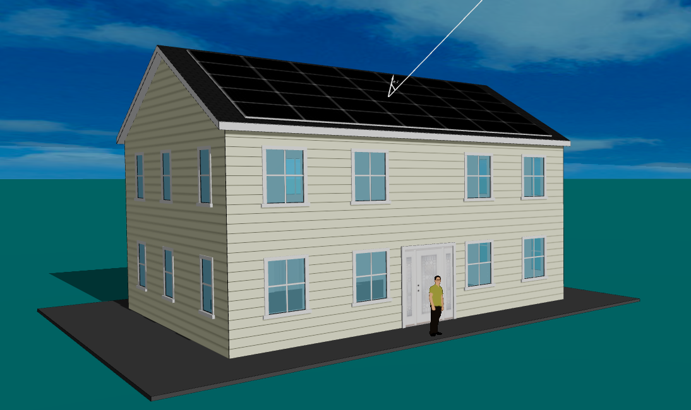
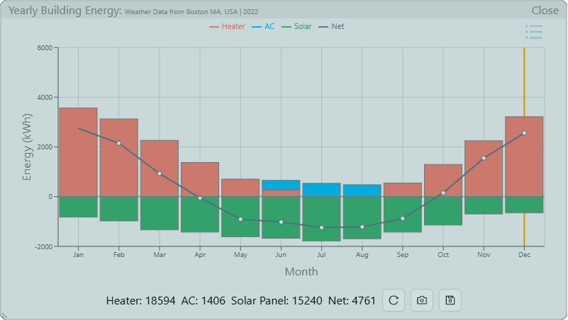
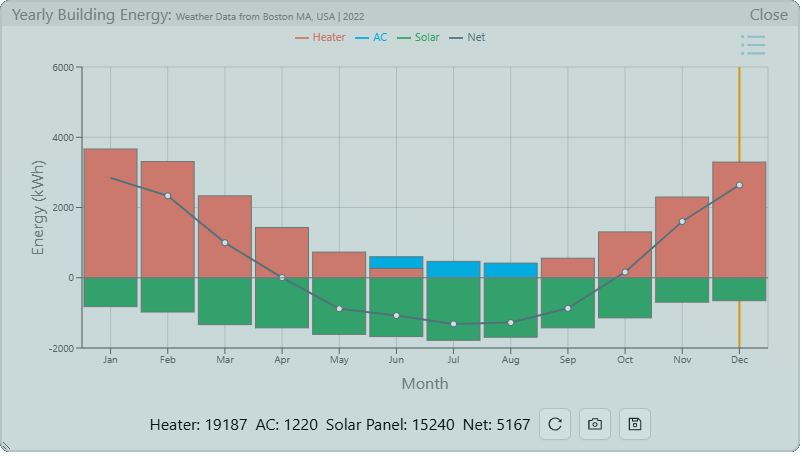
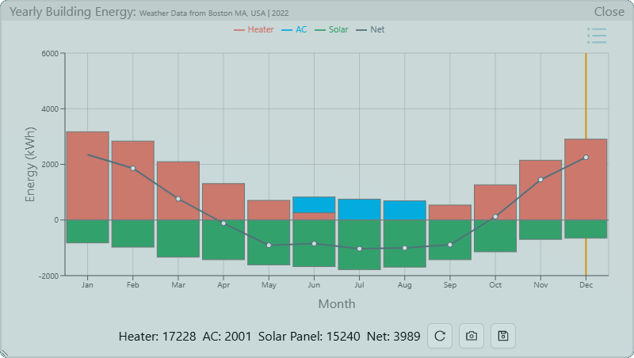
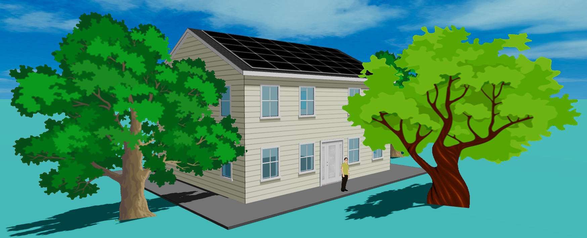
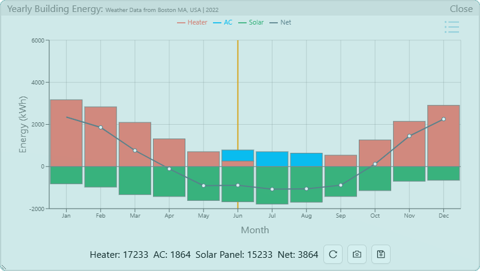
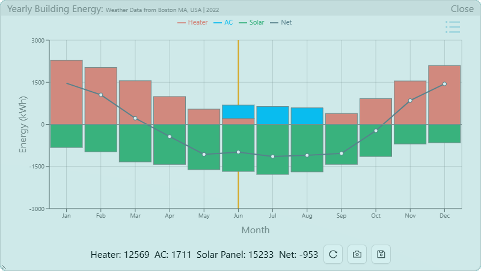

Designing an Energy-Plus House
An NGSS-aligned design challenge in which students iterate on a Colonial house until it generates more energy than it uses.
Are you looking for middle and high school engineering design projects that meet the requirements of the Next Generation Science Standards (NGSS)? Do you need free, high-quality software and curriculum that engage students in solving complex, authentic problems in the real world like scientists and engineers and yet can be easily implemented in the classroom? Do you want students to be more technically prepared to tackle energy and environmental issues in the future? If you answered "yes" to these questions, this tutorial is for you.
First, let's briefly introduce the Aladdin software. Aladdin is an integrated CAD+CAE program for designing and analyzing buildings that take advantage of renewable energy and energy efficiency solutions to reduce our dependency on fossil fuel (and other engineering systems that have sustainability goals). The software runs completely in your browser — there is no need to install anything! Based on the weather data of nearly 1,000 worldwide locations, Aladdin allows students around the world to design sustainable engineering solutions for their climates. It aims to engage students in science and engineering practices as required by NGSS. The streamlined capabilities of design, simulation, analysis, and visualization within Aladdin enables students to test and evaluate multiple design ideas through rapid cycles of virtual experimentation. With Aladdin, you can challenge students to design an energy-efficient house that, over the course of a year, produces more renewable energy than the energy required for heating and cooling it — this type of house is known as an energy-plus building. In addition to this goal, students must also meet a set of other design criteria and constraints. For example, the house should adopt an architectural style specified by the client, the size cannot be too big or too small, and the cost must not exceed the construction budget.
Before we start, I would like to show you a video about how easy it is to run a building energy simulation in Aladdin, as follows:
The science of building energy
Aladdin allows students to quickly sketch up realistic-looking houses using a basic set of design elements, including walls, roofs, windows, doors, and so on (Figure 1). This part is quite similar to the popular house design game Bloxburg that many students are playing these days (except that Aladdin doesn't support interior design).

Students can adjust the properties of each element such as size, position, orientation, R/U-value, solar heat gain coefficient, heat capacity, color, and more — this is where they make meaningful connections to basic science concepts that dictate the energy exchange between the house and the environment. For instance, the heat exchange between the inside and outside of a house through an element on its building envelope is described by the following formula (i.e., Fourier's Law of Thermal Conduction):
where Φ is the rate of the heat flow, Tout is the inside temperature (which is usually maintained by a thermostat), Tin is the outside temperature (which comes from the weather data for the current location), A is the area of the building envelope element, and U is its U-value (which is the inverse of the R-value). The effect of solar radiation, which depends on the sun path throughout the year, also plays a crucial role in the energy consumption of a building. But it is so much more complex to calculate that numerical simulation is needed to evaluate its effect on building energy use.
Whenever students want to evaluate the effect of a change on the energy consumption and generation of the house under design, they can run the built-in physics-based simulator of Aladdin, which can produce a visualization shown in Figure 2. The color map represents the distribution of the intensity of solar radiation that reaches the exterior surface of the house. The arrows represent the distribution of the intensity of heat flux flowing into or out of the house. As the visualization shows, windows and doors tend to lose more thermal energy in the winter than walls because they are less insulative; a surface that faces the sun tends to receive more solar radiation than a surface that does not. These nuances become self-evident with the assistance of the visualization.

Engineering analysis for making design decisions
Science concepts give us qualitative understanding, but engineering design demands quantitative results for decision making. To this end, students can plot the simulation results as a line graph that itemizes daily or annual energy use in different categories. Assuming that the indoor temperature is kept at 20°C (68°F) throughout the year, Figure 3 shows the seasonal trend of the energy consumption — heating dominates in the winter, cooling dominates in the summer, and both are needed during some days in the spring and fall (but the total energy curve peaks in the winter and summer):

This article starts with the exploration of two strategies for achieving energy surplus for the house under design: active and passive solar. Photovoltaic solar panels are typically considered as active solar systems as they rely on extrinsic devices to convert sunlight into electricity, which is eventually used to heat or cool the house. Passive solar buildings, on the other hands, use intrinsic elements such as windows and walls or landscape design to collect solar energy in the winter or reject solar energy in the summer.
Active solar design: Install solar panels
An energy-plus house often relies on active solar energy systems to generate power locally. Putting solar panels on the roof is a common solution. Since our goal is to produce as much energy as possible, let's opt for a decent solar panel in the residential market — the SPR-X21-335 model manufactured by the American company SunPower, which boasts a solar cell efficiency of 21% and a nominal power output of 335W. The model, along with many others, is supported within Aladdin (so there is no need for the user to gather the product specs and input them into the software manually). We should also try to fit as many solar panels as possible in the south-facing side of the roof. It turns out that we can install a 7×5 array of 35 solar panels in total if we choose the landscape orientation (Figure 4).

If we run the annual analysis again, we can see that the solar panels generate a lot of energy, but it falls short of meeting the total heating and cooling needs throughout the year. As Figure 5 shows, the daily energy generated by the solar panels is not enough to heat the house in the middle of winter, although it is closer to meeting the cooling need of the house in the middle of summer. In the spring and fall when the heat and cooling demands are usually low, the solar panels generate more electricity than the house consumes. During those seasons, the extra energy can be sold back to the grid through a net-metering program (if available in your state) and counted as credits for the annual energy use.

You may also notice that the solar panels increase the heating load and decrease the cooling load a bit. This is because the solar panels on the roof block the sunlight from reaching the roof. This reduces the solar heating of the house in the winter but prevents the unwanted heat from entering the house in the summer.
Passive solar design: Change the solar heat gains of windows
Another way to avoid excessive solar heating in the summer is to choose windows with a lower solar heat gain coefficient (SHGC). This way, we do not have to compromise the façade design of the house. A window with a lower SHGC value allows less sunlight to pass through such that the house isn't heated up as much. Given the fact that the day is much longer in the summer than in the winter in high-latitude areas such as Boston, such an adjustment may result in a net positive change for the house through lowering the cooling load in the summer to a greater extent than raising the heating load in the winter, thus bringing our design closer to the goal. But is that so? Figure 6 shows that reducing the SHGC values for all the west and east-facing windows does lower the cooling energy but the increase of heating energy exceeds the reduction, thus resulting in a net increase of yearly energy usage.

Note that this change increases the heating load of the house in the winter by about 593 kWh, more than the decrease of the cooling load in the summer which is about 186 kWh. This strategy may work better for houses in the south of the country where cooling is dominant. (You may be wondering why we don't reduce the SHGC values for the south and north-facing windows. It turns out that doing so does not result in a net improvement as the south-facing windows are very helpful in the winter when the sun shines from the south at a lower height in the sky. As for the north-facing windows, they do not receive a lot of solar radiation to begin with anyways. You can confirm these findings on your own with the online model provided via the link above.)
As a result of this finding, we increase the SHGC of all the windows of the house. Figure 7 shows that this decreases the total annual energy consumption.

Passive solar design: Plant trees
Trees can not only add natural beauty to the landscape around the house, but they can also reduce the cooling load in the summer by providing shading to the house. Figure 8 shows the house surrounded by some trees.

The results in Figure 9 illustrate that the trees indeed cut down the cooling load. If they are not very tall or very close to the solar panels, they cannot cast significant shadow to the panels to compromise their productivity.

Thermal solutions: Add insulation
To move towards the goal, we can install more solar panels on the north-facing side of the roof. But considering the much lower productivity on that side of the roof and the high expenses of solar panels and their installation, it will not be a cost-effective choice. Another way to reduce the energy consumption is to conserve energy by improving the insulation of the house. For example, if we increase the R-values of the roof and the walls and decrease the U-value of the windows (it is a convention in the U.S. to use U-value for windows and doors and R-value for other components), the net energy can hit the negative region (Figure 10), meaning that the house consumes less total energy than it generates over the course of a year.

In achieving the goal, we have used triple-pane windows, which typically have a U-value of about 0.25 (U.S. unit). The R-value for the walls and roof are set to be 20 (U.S. unit). These chosen values may be on the higher end of insulation. More options are recommended by the International Energy Conservation Code for different climate zones (Massachusetts is in zone 5A).
Summary
Through several iterations that involve a combination of various solutions, we have accomplished the mission of designing an energy-plus house! The final model is available via the following link:
To recap, the energy-plus house design challenge meets the NGSS engineering standards in several ways: 1) it is a direct response to HS-ETS1-4 that requires students to use a computer simulation to model and solve real-world problems, 2) it promotes systems thinking as students explore how individual elements interact to affect the overall performance of a house, and 3) it creates many opportunities for learning about trade-offs and optimizations, supported by the CAD-CAE fusion in Aladdin that greatly accelerates the feedback loop necessary for iterations (CAD for structure design and CAE for function analysis). Although the engineering projects based on Aladdin are limited to virtual design, they have the following advantages: 1) students ought to be provided with the practical opportunities to learn CAD/CAE technologies as nearly every engineer uses them today, 2) software can simulate situations that are not feasible to create in a school lab (e.g., waiting for a year to determine the annual energy use of a real house), and 3) the cost of implementing these projects is minimal — you only need computers that can run the Web-based Aladdin software, which is completely free to anyone.
← Back to Aladdin